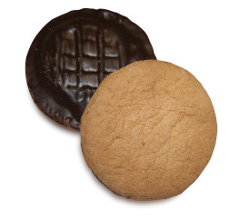

Jaffa Cake

Ground Control to Commander Briggs: how are things looking up there?
Commander Briggs to Ground Control: things are looking pretty empty. This planet is a barren land. Absolute zero, no detection of life forms. I noticed some backscattered light in the distance and will investigate presently…
Commander Briggs to Ground Control: through further investigation, I have found that the backscattered light is most likely to have been a trick of the mind. I traversed the landscape with the abnormality firmly within my sight at all times, but after circling this planet three times I failed to reach it. Thirty-two months have passed since I first caught sight of it. Today, it disappeared completely.
I walked towards it but never arrived. Four months into the investigation, I became weak and started crawling. Even after food and rest, I still felt incredibly weak. The weakness, I realised, arose from a state of mind rather than a physiological deficit. I crawled for the rest of the investigation which, in turn, took a toll on my body. I am now unable to stand up straight or look up from the ground. In truth, I am completely disfigured. I have spent too much time trying to close distance. I have not seen another living being in over three years. I have not seen my reflection in thirty-one months. I have not heard music or seen beauty since I came to this place. I have not felt joy since I left Earth.
The distance cannot be closed. The distance between myself and the light. The distance between myself and home, between myself and others. This will be my last transmission.